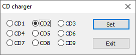

NOTE: The CD Charger allows you to change the disk currently inserted in the virtual CD drive. The user can select the disk volume by clicking on the corresponding radio button (from CD1 to CD9) and giving confirmation by clicking on the "Set" button. The "Exit" button will leave the panel without any change.
NOTE: This tool simulates the change of a CD disk inserted in the same unique CD drive. It does not simulate the presence of multiple disks at the same time. So, for instance, the CD drive letter will remain fixed and the content of the previously inserted CD will not be available until that disk is inserted again.
It should be noted that the CD change affects both the data track and the emulated CD-DA tracks, although the switch may not happen exactly at the same time, since it happens in any case when a new operation is performed, either on the data track or the virtual CD-DA tracks.
BEWARE: There is no control on the correctness of the user's choice, so clicking and making the confirmation for a wrong disk number will likely produce an error.
NOTE: The n-th CD must correspond to the data stored in a dedicated folder. For disk #1, the ripped CD-DA folder is "Music" and for the non CD-DA data (that is, those files visible in File Explorer directly), it is the folder specified in the "Fake CD" path. Starting from disk #2 to disk #9, the same folders are used, but with the automatic addition of a two-digit zero padded suffix, like in this example:
|
CD# |
CDA folder |
CD file system |
1 |
Music |
?/CD |
2 |
Music02 |
?/CD02 |
3 |
Music03 |
?/CD03 |
... |
... |
... |
9 |
Music09 |
?/CD09 |